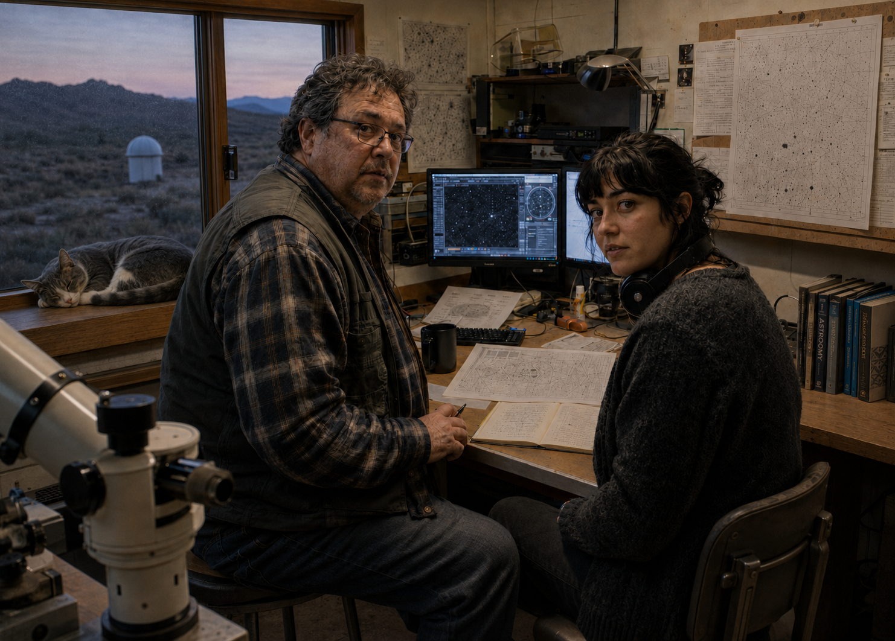

At Cielo Ventana, the Hunt Is Moving Beyond the Catalogs
Modern sky surveys can identify millions of known objects automatically. The harder work begins with what the software cannot explain.


CIELO VENTANA — Sofia Maren spends much of her working life looking at things that software has already decided are probably unimportant.
By the time a survey image reaches her workstation, the obvious work is usually finished. Known stars have been matched. Catalogued asteroids have been flagged. Satellite trails, detector artifacts and many of the familiar ways a camera can misbehave have already been identified or discarded. What remains is a smaller, messier category: signals that survived the first pass without earning an explanation.
Most of them eventually turn out to be ordinary.
“That is the part people usually leave out when they talk about discovery,” Maren said during a recent overnight visit to the observatory. “You spend a lot more time proving that something is boring than proving that it is interesting.”
Her desk looked less romantic than the word observatory tends to suggest. Two monitors, a cooling cup of coffee, a paper notebook she insisted she was still using, and a pair of headphones that moved between her ears and her neck as people came and went. A gray-and-white cat named Comet was asleep on an equipment cabinet several feet away.
No one at Cielo Ventana claims to own Comet. This does not appear to have affected his authority.
What the catalogs are good at
Modern astronomy is unusually good at remembering what it has already seen.
Large surveys repeatedly photograph enormous areas of the sky, producing more images than human observers could reasonably inspect one by one. Software compares those frames with catalogs containing the expected positions and characteristics of known stars, asteroids, satellites and other sources. The process is fast, increasingly automated and essential to modern observing.
The system still has to make judgment calls. Reject too little and the survey drowns in noise; reject too much and unusual observations disappear with it.
That is where human review still matters. Automation makes the data manageable, but someone has to decide which leftovers deserve another look.
Maren works close to that boundary. She is part of the team reviewing moving-object candidates and low-confidence detections at Cielo Ventana, where the question is often less “What did we find?” than “What is the most ordinary explanation we have not eliminated yet?”
She tends to start with the raw frames.
“Processed data is useful,” she said. “It can also become persuasive very quickly. Sometimes I want to see what the detector actually recorded before anyone made it easier to look at.”
Elias Navarro prefers the boring explanation
Across the survey room, Elias Navarro keeps a paper notebook beside his keyboard and wears his glasses low enough on his nose that he spends much of a conversation looking over them.
Navarro, 54, has spent most of his career in orbital dynamics and the less glamorous edges of moving-object astronomy: faint tracks, incomplete observations and trajectories that cannot yet support the precision people want from them.
Within that field, he has a reputation for being useful precisely when the answer is unclear.
“The computer will give you a number,” Navarro said. “That does not mean the universe agreed to it.”
He is especially suspicious of orbit estimates built from short observational baselines. A handful of positions can sometimes support many possible trajectories, all mathematically valid and physically very different. Add one older observation, and entire families of solutions may disappear.
This makes archival work unexpectedly important. When a new candidate appears, astronomers may search backward through months or years of older images to see whether the same source was present before anyone knew to look for it.
“A new observation tells you where something is now,” Navarro said. “An old one can tell you whether your entire story about how it got there was wrong.”
Two different kinds of skepticism
Maren and Navarro approach uncertainty differently enough that their conversations occasionally resemble an argument in which both people are trying to make the same claim smaller.
Maren is quicker to notice the unusual case and more willing to chase it. Navarro is slower to let the unusual case acquire a name.
Neither appears bothered by the arrangement.
During the Ledger’s visit, Maren stopped at a weak point in a survey frame and called Navarro over. He looked at it for several seconds, asked whether the source had a catalog match, then began listing possible errors before she had finished explaining what she had already checked.
Maren waited him out.
“This is what he does,” she said.
Navarro did not look away from the monitor. “It saves time.”
“It objectively does not.”
The point eventually turned out to be an image-registration problem from a previous processing run.
Navarro looked pleased.
Maren looked almost as pleased, which may explain why the partnership works.
Observed, inferred, unknown
Navarro has a habit of dividing difficult problems into three categories: observed, inferred and unknown.
The first category is usually short. The third is not.
The distinction sounds elementary until a room full of smart people starts discussing an observation they badly want to understand. Inference can pick up the tone of fact surprisingly quickly, especially when a model produces a clean-looking answer.
Maren has adopted the same vocabulary, although with less affection for how often “unknown” wins.
“You can make a model tell you a lot if you give it permission,” she said. “The hard part is remembering which parts came from the sky and which parts came from you.”
That discipline matters more as survey astronomy speeds up. New instruments produce more detections, automated systems compare more of them, and follow-up networks can shift telescope time between facilities with less delay than even a decade ago.
The result is not always greater certainty. Sometimes it simply means astronomers arrive at the uncertain part sooner.
The archive is becoming an instrument
One of the more consequential changes at Cielo Ventana has happened away from the telescope.
The observatory has been improving the way older survey data can be searched, reprocessed and compared with new observations. Frames collected for one project can later become evidence for another. A patch of sky photographed years ago may contain a source that nobody had any reason to notice at the time.
Maren described the archive as “a telescope that only looks backward.”
Navarro objected to the metaphor on technical grounds, then spent several minutes explaining why the underlying idea was useful.
The exchange is typical of the two of them.
The practical advantage of old data is baseline. Motion that appears ambiguous across one night can look very different across several months. A weak detection that means little by itself may become useful when another observatory finds the same source independently.
Independent confirmation matters partly because modern software can produce results that look persuasive. Two facilities using different instruments and different processing chains are less likely to reproduce the same local error.
“You want the other team to have enough information to search,” Maren said, “but not so much that you tell them exactly what answer to find.”
Astronomy after midnight
Cielo Ventana is quieter than its work.
The domes sit against a dark high-desert sky, separated from the survey rooms by roads, utility buildings and the occasional pool of carefully shielded light. Inside, the night moves by in image loads, telescope schedules and small arguments over whether a signal deserves another ten minutes.
Comet periodically crosses the room as if conducting inspections. Navarro keeps a small container of cat food in his desk and denies that this constitutes evidence of ownership.
“It says chicken pâté on the label,” Maren said.
Navarro replied, “An unfortunate labeling choice.”
The humor helps because much of the work is repetitive. Astronomy at this scale is checking, discarding, comparing and checking again. When something genuinely interesting does appear, it usually comes after hours in which nothing did.
Maren is early enough in her career that the repetition still carries visible excitement. She talks quickly when a data problem becomes interesting and slows down when she starts describing what the evidence can actually support.
Navarro does nearly the reverse.
He appears most comfortable once an interesting possibility has been reduced to a smaller, defensible statement.
What gets through
The next generation of sky surveys will find more of almost everything: asteroids, transient events, variable sources, artifacts and observations that do not fit neatly into a catalog on the first pass.
The harder problem is deciding which anomalies deserve human attention without tuning automated systems to either chase every oddity or throw away the one case that matters.
For astronomers like Maren and Navarro, the tools have changed more than the discipline has. The archives are larger and the software is faster, but the job still comes back to the same habits: know what was observed, know what was inferred, and be willing to leave the rest unanswered.
Near dawn, Maren stepped outside the survey room with her headphones around her neck. The telescope domes were beginning to fade into the brightening sky, and the stars above them were disappearing one by one.
She had spent most of the night looking at things too faint, too incomplete or too ordinary to become discoveries, and she did not seem disappointed.
“Most of the time,” she said, “finding out you were wrong is still finding something out.”